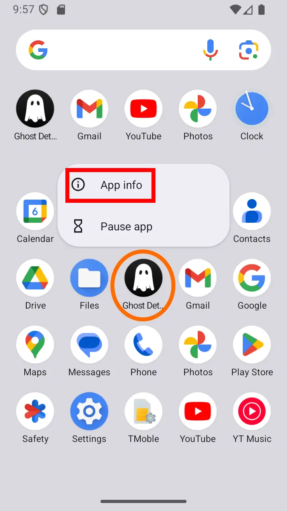
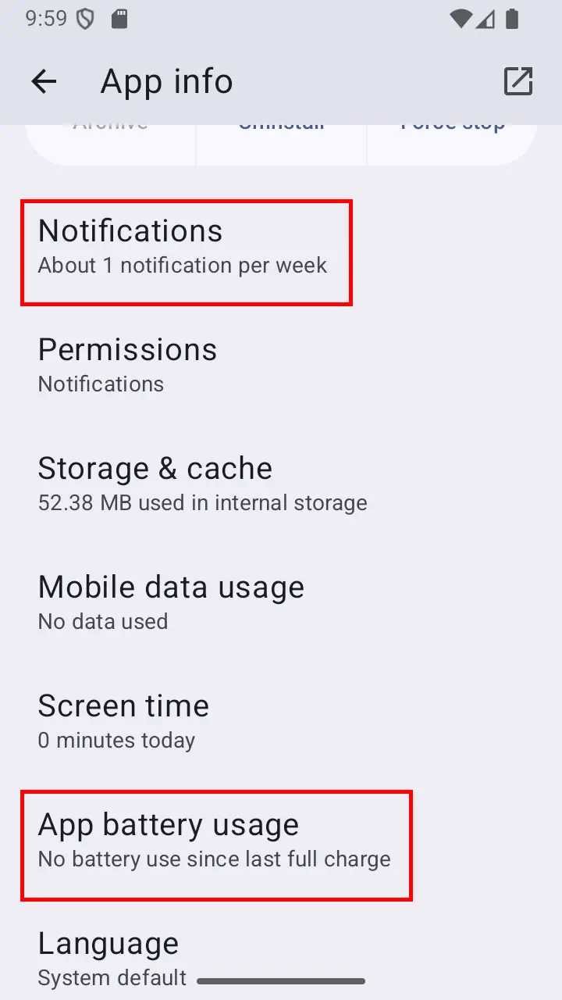
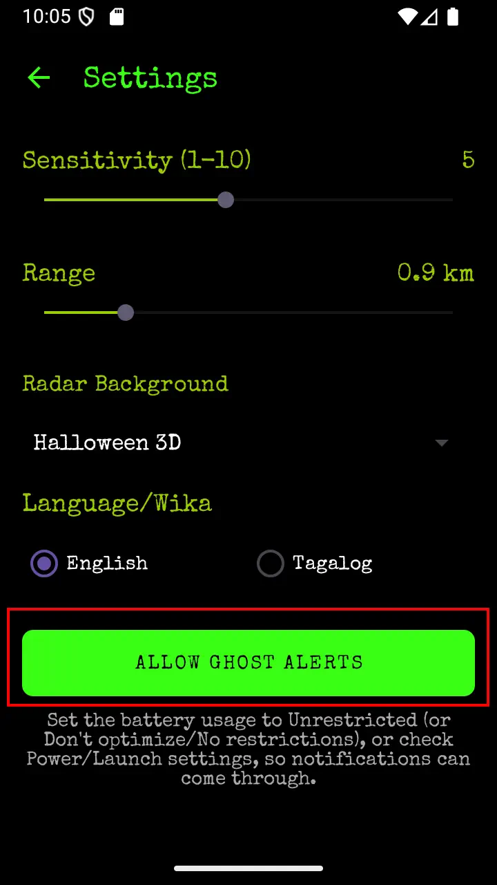

Uncover the Spirits of the Philippines
Step into the thrilling world of the unseen with Ghost Detector — your ultimate companion for exploring the paranormal!
Is that a chill down your spine, or just the air conditioning?
Forget the generic ghouls – our app brings to life the rich, captivating, and sometimes terrifying creatures of Filipino folklore.
Encounter legendary entities such as the shape-shifting Aswang, the mysterious Manananggal, the towering Kapre, and the mischievous Duwende.
Each Mumu has a story waiting to be discovered.
Ghost Detector is not just about frights and fun — it’s also a journey into culture and heritage.
Learn about the myths that shaped generations and explore the supernatural landscape of the Philippines.
Key Features:
- Ghoulpedia — Explore the legends of Filipino spirits.
- Incident Log — Track your ghostly encounters.
- Hounting Experience — Scary sounds and eerie visuals.
- Filipino Heritage — Discover cultural myths and stories.
- Tagalog language Support — Authentic local feel with Mumu legends.
Keep Ghost Summoning Alive



If the ghost doesn’t appear on time, you may need to allow the app to run in the background.
Also, check that Ghost Notifications are allowed.
How to Fix:
Long-press the Ghost app icon → App info
Or, go to Ghost App Settings → press "Allow Ghost Alerts"
- Check Notifications settings
Find Battery / Power / Launch settings
- Set to Unrestricted / No restrictions / Allow background activity
Phone-Specific Notes:
- Honor / Huawei: Disable “Manage automatically”, then enable Auto-launch, Secondary launch, Run in background
- Samsung: Battery → Unrestricted, remove from Sleeping apps
- Xiaomi / Redmi / Poco: Battery saver → No restrictions
- Oppo / Realme / OnePlus: Battery usage → Allow background activity
- Pixel / Stock Android: Battery → Unrestricted
The Story Behind Ghost Detector
Ten years ago in Manila, while testing a car tracking device with a door sensor, strange things began happening.
The old tracking unit’s clock was broken, so the logs kept showing doors opening and closing at 2 AM and 5 AM — when nobody was in the office.
Our office staff became convinced it was a Mumu haunting the workplace.
That’s when we realised that a real “Ghost Tracker” would be something great!
It took ten years wondering, but here we are — with Ghost Detector, finally ready to uncover what lurks beyond.